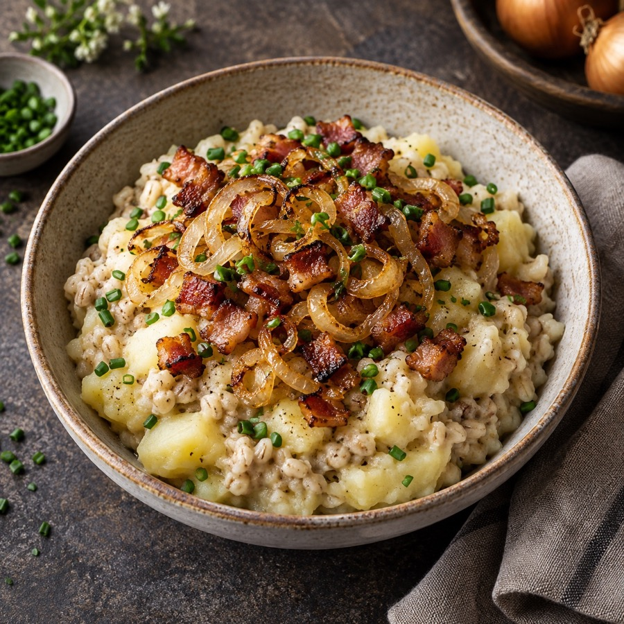
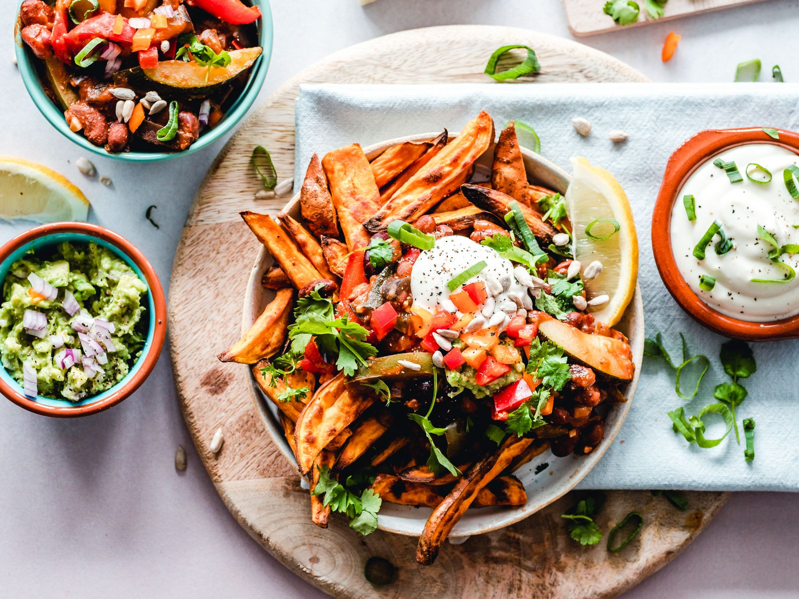
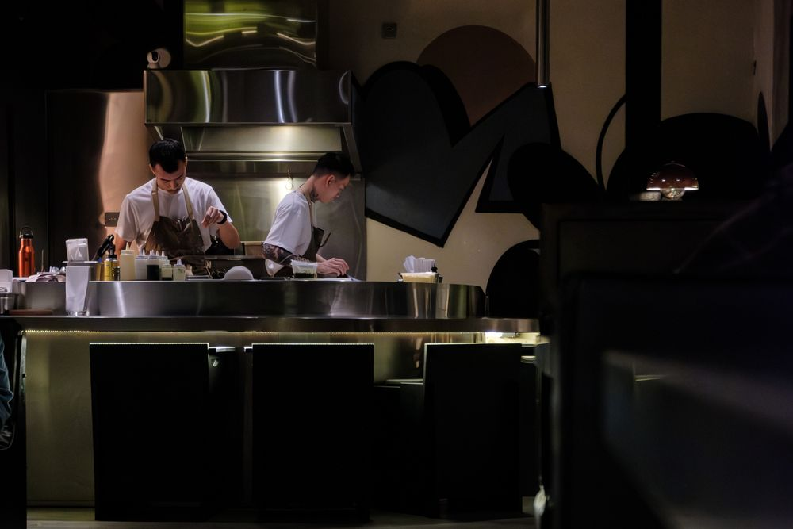
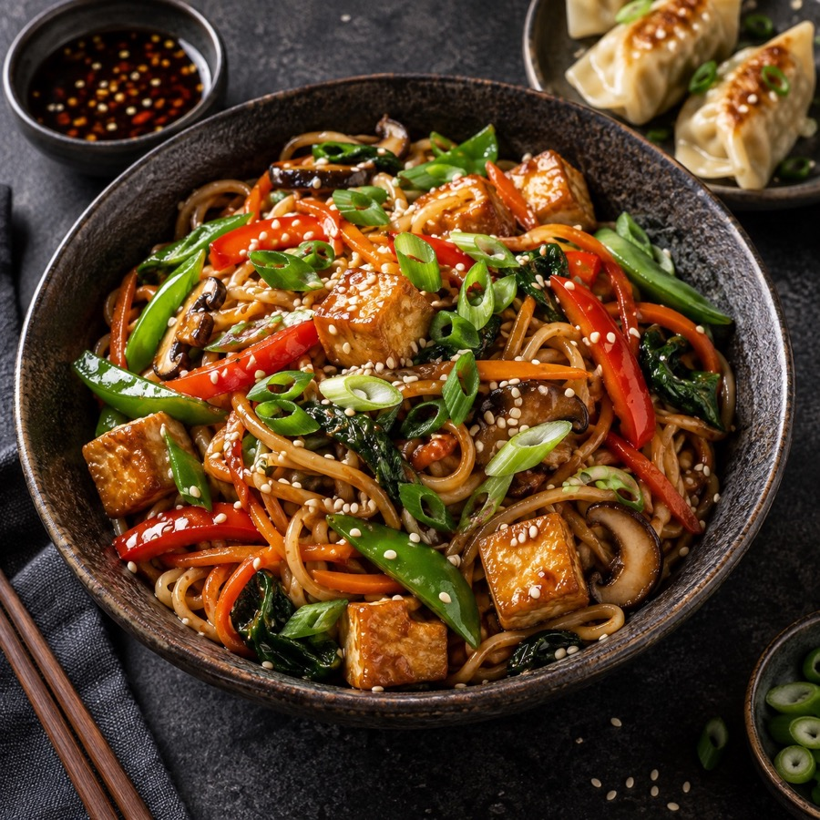
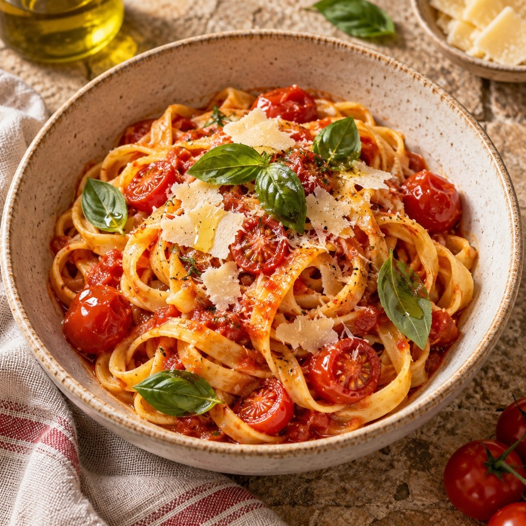

Meist
Hea toit toob inimesed kokku. Cookbookist leiad inspiratsiooni nii argiõhtuseks kokkamiseks kui ka pikaks nädalavahetuse lõunaks sõprade seltsis.
Meid ühendab uudishimu uute maitsete vastu ja armastus koduse toidu järele. Avasta Eesti köögi tuttavad lemmikud, Aasia aromaatsed road ja Itaalia lihtsad maitsed. Kõige parem retsept on see, mida tahad teistega jagada.

Retseptid

Aasia köök
